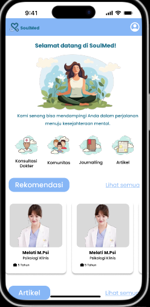
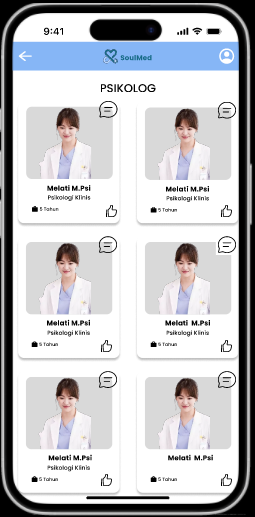
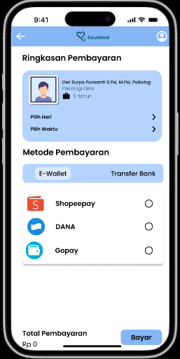
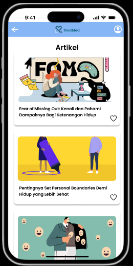
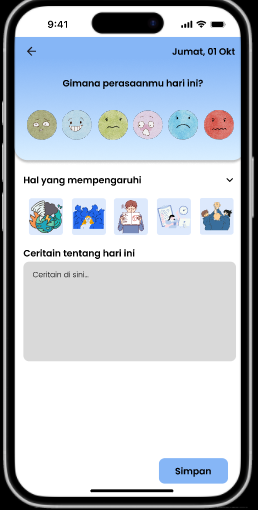
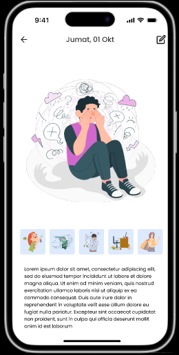
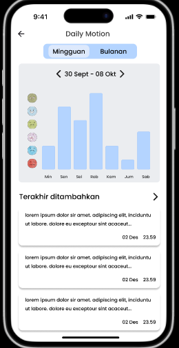
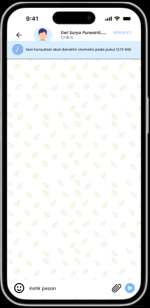

Desain UI/UX
Desain UI/UX website konsultasi mental ini berfokus pada pengalaman pengguna yang intuitif, aman, dan nyaman. Pengguna dapat dengan mudah memilih dokter, menentukan jadwal konsultasi, dan melakukan pemesanan langsung dari web. Setiap fitur dirancang agar mudah diakses, dengan navigasi jelas, warna yang menenangkan, dan ikon yang familiar.
-
Landing Page & Dashboard: Tampilan bersih, menu navigasi jelas, serta akses cepat ke fitur utama seperti konsultasi, journaling, mood tracker, dan riwayat konsultasi.
-
Pemilihan Dokter & Jadwal: Pengguna dapat memilih dokter spesialis sesuai kebutuhan, melihat profil dokter, serta memilih jadwal yang tersedia melalui kalender interaktif. Proses pemesanan dibuat sederhana dan transparan.
-
Fitur Konsultasi: Setelah pemesanan, pengguna dapat melakukan konsultasi via chat atau telepon langsung dengan dokter yang dipilih. Tersedia notifikasi pengingat jadwal dan status pemesanan.
-
Journaling & Mood Tracker: Pengguna dapat menulis jurnal harian dan melacak suasana hati (mood) dengan visualisasi grafik sederhana, membantu refleksi diri dan pemantauan kesehatan mental secara mandiri.
-
Responsif & Aksesibel: Desain responsif untuk desktop dan mobile, serta aksesibilitas warna dan ukuran font yang ramah bagi semua kalangan.
Fitur Utama
- Konsultasi dengan dokter pilihan sesuai jadwal yang dipilih
- Pemesanan konsultasi langsung melalui website
- Fitur journaling untuk mencatat perasaan dan pengalaman harian
- Fitur mood tracker dengan visualisasi grafik
- Chat dan telepon langsung dengan dokter setelah pemesanan
Teknologi yang Digunakan
← Kembali ke Proyek